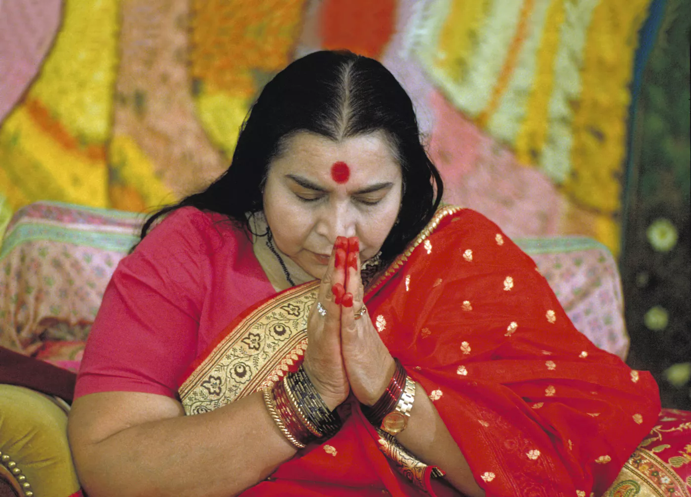

Sempre gratuito
Shri Mataji ha voluto che la realizzazione del Sé fosse accessibile a tutti: per questo Sahaja Yoga non ha mai avuto costi.
“Mi inchino a tutti i ricercatori della verità”

Shri Mataji Nirmala Devi nasce il 21 marzo 1923 a Chhindwara, nell’India centrale, da una famiglia di origine cristiana. Da giovanissima partecipa alla lotta non violenta per l’indipendenza del suo paese: Gandhi resta colpito dalla saggezza e dalla maturità di una ragazza così giovane.
Per comprendere a fondo il funzionamento della personalità umana studia medicina al Medical College di Lahore.
Il 5 maggio 1970, a Nargol, sulla costa occidentale dell’India, scopre il modo di donare la realizzazione del Sé a molte persone contemporaneamente. Da quel giorno dedica tutta la sua vita a condividere questa esperienza.
Per oltre quarant’anni viaggia instancabilmente in tutto il mondo, tenendo conferenze pubbliche e programmi di meditazione, senza mai accettare denaro per la realizzazione del Sé.
La meditazione è il solo modo di crescere.Shri Mataji Nirmala Devi
Nasce il 21 marzo a Chhindwara, in India.
Da giovanissima partecipa alla lotta non violenta per l’indipendenza dell’India, accanto al movimento di Gandhi.
Il 5 maggio, a Nargol, fonda Sahaja Yoga e inizia a donare la realizzazione del Sé in modo collettivo.
Diffonde Sahaja Yoga prima a Londra e in Europa, poi in tutto il mondo, sempre gratuitamente.
Interviene alla Conferenza Internazionale sulla Donna organizzata dalle Nazioni Unite a Pechino. Viene candidata per due volte al premio Nobel per la Pace.
Il 23 febbraio lascia il corpo fisico a Genova. I suoi insegnamenti continuano a diffondersi grazie alle associazioni senza scopo di lucro presenti in più di cento nazioni.
Shri Mataji ha voluto che la realizzazione del Sé fosse accessibile a tutti: per questo Sahaja Yoga non ha mai avuto costi.
Oggi Sahaja Yoga è praticato in più di cento paesi, da persone di ogni cultura, religione ed età.
La meditazione collettiva è al centro della pratica: meditare insieme rafforza l’esperienza di ciascuno.